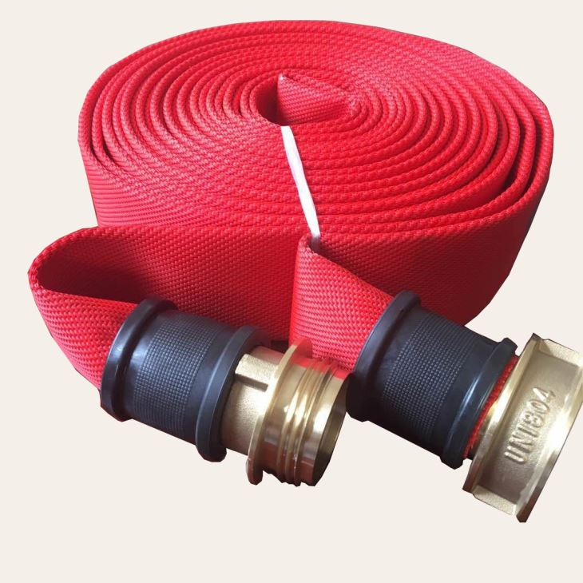
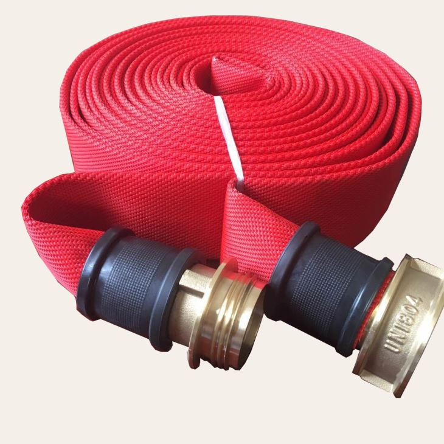

Vandens žarnos
2020.10.28 06:29

Prisijungti | Registruotis | Paskyra | Krepšelis | Kontaktai +370 677 47877
Krepšelis
0 prekė(s) - 0.00€Jūsų prekių krepšelis tuščias
navigation Tvenkinių įrangaAeracija
Aeracijos komplektai Aeratoriai Difuzoriai Kolektoriai Orapūčių atsarginės dalys Orapūtės Pūstuvai Trapai su aeracijaNaudingosios bakterijos
Amoniako šalinimui Deguonies kiekiui didinti Dozatoriai Dumblių naikinimui Fontanams Fosfatų kiekiui mažinti KH, GH, pH subalansavimui Matuokliai, testeriai Nuosėdoms šalinti Preparatai augalinkystei Profilaktinės priemonės Siūlinių dumblių naikinimui Tvenkinio filtravimo sistemoms Vaistai žuvims Vandens skaidrinimuiFiltracija
Atsarginės filtrų dalys Būgniniai filtrai Dugno trapai Filtracijos komplektai Granulių filtrai Gravitaciniai filtrai Kolektoriai Kriokliai Latakai Priešfiltriai Proteinų skimeriai Skimeriai Slėginiai filtraiFiltravimo medžiagos
Bio įkrova Blokai Filtro grotelės Lakštai Maišeliai filtrų užpildams Neršto Šepečiai Porolonas ŠepečiaiPriežiūra, valymas
Apsauga nuo užšalimo Dugno šepečiai Graibštai Gyvūnų atbaidymo priemonės Matuokliai, testeriai Spąstai Termometrai Tinklai Vakuuminiai siurbliaiVandens sterilizatoriai
Elektrolizės įrenginiai Keičiamos lempos Kvarcinis stiklas Ozonatoriai UV-C sterilizatoriaiApšvietimas
Apšvietimo įrangos priedai Halogeninis apšvietimas LED apšvietimasŠildytuvai, aušintuvai
Vandens aušintuvai Vandens šildytuvaiPašaras, šėryklos
Pašaras tvenkinio žuvims ŠėryklosVandens siurbliai
Drenažiniai siurbliai Davikliai Rankinės pompos Šiluminės rėlės Siurbliai tvenkiniamsGeotekstilė, plėvelė
Maišai žuvų transportavimui Maitinimo jungtys Plėvelė, Geotekstilė PriedaiDekoracijos
Augalų krepšeliai PriedaiFontanų įranga
Fontanų purkštukai Plaukiojantys fontanai Siurbliai fontanams Stacionarūs fontanaiĮranga akvariumams
Difuzoriai Filtrai akvariumams Kolektoriai Orapūtės akvariumams Šildytuvai akvariumams Siurbliai akvariumams Sterilizatoriai akvariumams Baseinų įrangaBaseinų apšvietimas
LED apšvietimasBaseinų filtracija
Dugno trapai Filtrų smėlis, stiklas Multifunkcinės sklendės Skimeriai Smėliniai filtraiBaseinų priežiūra, valymas
Baseino žarnos Chemikalų dozatoriai Baseino graibštai Dugno šepečiai TermometraiĮvairūs priedai baseinui
KopėčiosŠildymas
Vandens šildytuvaiVandens siurbliai
Baseinų siurbliai Davikliai Šiluminės rėlėsVandens sterilizavimas
Keičiamos lempos Kvarcinis stiklas UV-C sterilizatoriai LaistymasIššokantys laistymo purkštukai
Statinių purkštuvų korpusai Turbininiai purkštuvai Priedai purkštukamsLaistymo purkštuvų antgaliai
Nereguliuojamo kampo statiniai antgaliai Reguliuojamo kampo statiniai antgaliai Rotoriniai antgaliaiĮranga automatiniam laistymui
Davikliai, jutikliai, ministotelės Laidai Laistymo siurblys Laistymo laikmačiai ValdikliaiElektromagnetiniai vožtuvai ir priedai
Elektromagnetiniai vožtuvai Kolektoriai vožtuvams Kolektorinės dėžėsRankinio laistymo įranga
Kilnojami purkštuvai Vežimėliai, laikikliai laistymo žarnoms Laistymo antgaliai, pistoletai, šepečiaiGreitos jungtys, vožtuvai, kolektoriai
Greitos jungtys Greitų jungčių kolektoriaiLašelinis laistymas, kapiliarai
Lašeliniai vamzdžiai Priedai Slėgio reguliatoriaiPurkštuvai žemės ūkiui
Didelio našumo purkštuvai Vidutinio našumo purkštuvai Mažo našumo purkštuvai Purkštuvų stovai Jungtys, vamzdžiaiPVC-U jungtys, sklendės
Atbuliniai vožtuvai Flanšinės jungtys PVC-U adapteriai PVC-U aklės PVC-U alkūnės PVC-U antgaliai žarnai PVC-U atlankos PVC-U bako jungtys PVC-U flanšai PVC-U išardomos jungtys PVC-U įvorės PVC-U keturšakiai 90° PVC-U movos PVC-U nipeliai PVC-U peilinės sklendės PVC-U redukcijos PVC-U redukuoti nipeliai PVC-U redukuoti trišakiai PVC-U rutulinės sklendės PVC-U S-forma PVC-U srieginės movos PVC-U srieginės redukcijos PVC-U trišakiai PVC-U veržlės Sieteliai Skaidrūs intarpai Srauto matuokliai Srieginės bako jungtys Tarpinės Užveržiami adapteriaiPP jungtys, sklendės
Plastikinės movos iš polipropileno (PP) PP aklės PP alkūnės žarnoms PP antgaliai žarnai PP keturšakiai 90° PP nipeliai PP redukcijos PP redukuoti sujungimai PP sklendės PP srieginės alkūnės PP sujungimai PP trišakiai PP veržlės PP Y-filtraiLanksčios guminės jungtys
Guminės aklės Guminės alkūnės Guminės movos Guminės redukcijos Guminiai trišakiaiVamzdžiai, žarnos
Oro žarnos Sąvaržos Vamzdžiai Vamzdžių laikikliai Vandens žarnosProcesų vožtuvai
Klijai ir valikliai
PP kompresinės jungtys
NBR sandarikliai / tarpinės PP adapteriai PP aklės PP alkūnės PP movos PP POP-UP alkūnės PP redukcijos PP redukuoti trišakiai PP sienos jungtys PP srieginės alkūnės PP srieginiai redukuoti trišakiai PP trišakiaiPP jungtys LDPE vamzdžiui
PP aklės PP įspaudžiami adapteriai PP įspaudžiami sujungimai PP įspaudžiami trišakiai 90° PP įspaudžiamos alkūnės 90° PP įspaudžiamos sklendės PP užspaudžiami adapteriai PP užspaudžiami sujungimai PP užspaudžiami trišakiai 90° PP užspaudžiamos alkūnės 90° AKCIJOS Vandens žarnos Kategorijos Akvariumai ir jų įranga Baseinų įranga Jungtys, vamzdžiai Laistymas Tvenkinių įranga Gamintojai: AstralPool 0 Erum 0 Turimas kiekis Išankstinis užsakymas 0 Pristatymas per 1-2 savaites 0 Turime sandėlyje 0 pristatymas per 2-5 darbo dienas 0 iki 9 darbo dienų 0 pristatymas per 2-4 savaites 0 Diametras 13 0 19 0 25 0 32 0 38 0 40 0 50 0 Modelis Baseino žarna 0 Su Briauna 0 Kaina: € - €Vandens žarnos
Jei domina VANDENS ŽARNA, mūsų specializuotoje internetinėje parduotuvėje už gerą kainą įsigysite įvairaus diametro lanksčios žarnos vandens tiekimui ir paskirstymui. PIRKITE INTERNETU – didelis pasirinkimas, patogus atsiskaitymas ir pristatymas visoje Lietuvoje Rūšiuoti pagal: Standartinė Pavadinimas (A - Z) Pavadinimas (Z - A) Kaina (Žema Aukšta) Kaina (Aukšta Žema) Prekės kodas (A - Z) Prekės kodas (Z - A) Rodyti: 25 32 50 75 100Lanksti žarna su briauna, 13mm
0.98€Itin lankstus žarnos pastiprinimas tvirta PVC spirale. Itin lanksti vakuuminė žarna, skirta sodo tve.....
PirktiLanksti žarna su briauna, 19mm
1.21€Itin lankstus žarnos pastiprinimas tvirta PVC spirale. Itin lanksti vakuuminė žarna, skirta sodo tve.....
PirktiLanksti žarna su briauna, 25mm
1.67€Itin lankstus žarnos pastiprinimas tvirta PVC spirale. Itin lanksti vakuuminė žarna, skirta sodo tve.....
PirktiLanksti žarna su briauna, 32mm
2.30€Itin lanksti vakuuminė žarna, skirta sodo tvenkinio filtravimui. Itin lankstus žarnos pastiprinimas .....
PirktiLanksti žarna su briauna, 40mm
3.27€Itin lankstus žarnos pastiprinimas tvirta PVC spirale. Itin lanksti vakuuminė žarna, skirta sodo tve.....
PirktiLanksti žarna su briauna, 50mm
4.45€Itin lankstus žarnos pastiprinimas tvirta PVC spirale. Itin lanksti vakuuminė žarna, skirta sodo tve.....
PirktiNeskęstanti baseino valymo žarna Astralpool Ø38-10m rulonas
30.19€Modelis VPE Svoris, Kg Tūris, m3 .....
PirktiNeskęstanti baseino valymo žarna Astralpool Ø38-12m rulonas
35.63€Modelis VPE Svoris, Kg Tūris, m3 .....
PirktiNeskęstanti baseino valymo žarna Astralpool Ø38-15m rulonas
44.23€Modelis VPE Svoris, Kg Tūris, m3 .....
PirktiNeskęstanti baseino valymo žarna Astralpool Ø38-6m rulonas
46.95€Modelis VPE Svoris, Kg Tūris, m3 .....
PirktiNeskęstanti baseino valymo žarna Astralpool Ø38-8m rulonas
25.47€Modelis VPE Svoris, Kg Tūris, m3 .....
Pirkti Rodoma nuo 1 iki 11 iš 11 (1 puslapių) Prekių atsiėmimo punktas: Mainų g. 6, LT-94101 Klaipėda Turite klausimą?Parašykite mums Sekite naujienas
Socialiniuose tinkluose
Pagalba pirkėjui
Apie mus Atsiskaitymas už prekes Pristatymo informacija Garantinis aptarnavimas Keitimas Pirkimo sąlygos Prekių grąžinimas Privatumo politika Atliekų rūšiavimas Patarimai kaip išsirinkti įrangą Skaitiniai tvenkinių savininkamsKategorijos
Akvariumai ir jų įranga Baseinų įranga Jungtys, vamzdžiai Laistymas Tvenkinių įranga UAB „Erum International”
Adresas: Mainų g. 6-3, LT-94101 Klaipėda
Įmonės kodas: 302433989
PVM mokėtojo kodas: LT100005423419
Bankas: UAB Paysera LT
Banko sąskaita: LT493500010001010570
SWIFT kodas: EVIULT21XXX
- Vandens žarnos | Guminės ir transportavimo žarnos - Hidrobalt
- Pramoninės žarnos - Hidrobalt
- Vandens žarnos - ErumAqua
- Lanksčios Žarnos - staliams.lt
- Žarnos, jungės dušams | Senukai.lt
- Žarnos
- Žarnos | TECHNOBALTIC
- Žarnos | www.siurbliai.lt
- Žarnos - Utenos Agroprekyba
- Storosios žarnos vėžio prevencinė programa
- Vandens žarnos | Guminės ir transportavimo žarnos - Hidrobalt
Pradinis » Komponentai pramonei » PRAMONINĖS ŽARNOS Ieškoti. Rodyti tik prekes sandėlyje Rodyti tik akcijines prekes Rodyti kainas su PVM PRAMONINĖS ŽARNOS. APKABOS (9) 5. 3. 1. PRAMONINĖS JUNGTYS (5) 2. 2. PNEUMOTRANSPORTO . VANDENIUI IR ORUI ...
- Pramoninės žarnos - Hidrobalt
Žarnos Jungimo movos Greitos jungtys Kištukai Oro paskirstytojai Antgaliai Poliravimui/ šlifavimui Pneumatiniai rinkiniai Pneumatiniai siaurapjūkliai AUTOSERVISO ĮRANKIAI Variklio ardymo, paskirstymo velenų fiksavimo, diržo, pompos skremulio, smagračio, alkūninių velenų įrankių rinkiniai Įrankiai variklio remontui Veleno remonto ...
- Vandens žarnos - ErumAqua
Gaisrinės žarnos vidaus čiaupams komplektas Ø 52 mm. (ilgis 20 m., 2galvutės GR-50(GOST ) 10 bar. Pagaminta ES
- Lanksčios Žarnos - staliams.lt
– Apie mus – Kontaktai – Privatumo politika – Pristatymas ir grąžinimas . Utenos Agroprekyba, UAB Stoties g. 28, Utena +370 699 95478. utenosagroprekyba@gmail.com
- Žarnos, jungės dušams | Senukai.lt
Dirgliosios žarnos sindromas (anglų k. “leaky gut syndrome”) yra sparčiai plintanti būklė, milijonai žmonių kovoja su ja arba net nežino, kad ja serga.Iš jo pavadinimo galite manyti, kad dirgliosios žarnos (“pralaidaus žarnyno”) sindromas paveikia tik virškinimo sistemą, tačiau iš tikrųjų tai gali sukelti daug kitų sveikatos problemų.
- Žarnos
Kraujavimas iš virškinamojo trakto – tai ūmus, gausus, dažnai lėtinis ir nepastebimas arba ,,slaptas“ kraujavimas iš viršutinės virškinimo kanalo dalies (stemplė, skrandis, dvylikapirštė žarna) ar apatinės virškinimo kanalo dalies (tuščioji, klubinė, storoji ir tiesioji žarna). Iš visų kraujavimo iš virškinamojo kanalo atvejų apie 80–90 % yra kraujavimas iš ...
- Žarnos | TECHNOBALTIC
Lanksčios žarnos. Read more. Prekių pristatymas. Prekės bus atvežtos į bet kurį Lietuvos miestą ar gyvenvietę, Jūsų nurodytu adresu, iki pat durų.
- Žarnos | www.siurbliai.lt
Dušo žarna Thema Lux 700015, 150 cm, 1/2'' Medžiaga: Nerūdijantis plienas, Polivinilchloridas (PVC) Žarnos ilgis: 150 cm
- Žarnos - Utenos Agroprekyba
Storosios žarnos vėžio prevencinė programa. Storosios žarnos vėžio ankstyvosios diagnostikos prevencinė programa teikiama asmenims nuo 50 m. iki 74 m. amžiaus, vieną kartą per dvejus metus. Dėl dalyvavimo programoje turėtų kreiptis į savo šeimos gydytoją. Programos priemonės:
- Storosios žarnos vėžio prevencinė programa
Reikalingos pramoninės žarnos vandeniui? Susipažinkite su mūsų asortimentu! Apollo SE, 202AA, Nettuno FF, Mercurio M, Hilcoflex, Klenet, Ragno CR ir kt.
Pradinis » Komponentai pramonei » PRAMONINĖS ŽARNOS Ieškoti. Rodyti tik prekes sandėlyje Rodyti tik akcijines prekes Rodyti kainas su PVM PRAMONINĖS ŽARNOS. APKABOS (9) 5. 3. 1. PRAMONINĖS JUNGTYS (5) 2. 2. PNEUMOTRANSPORTO . VANDENIUI IR ORUI ...
Žarnos Jungimo movos Greitos jungtys Kištukai Oro paskirstytojai Antgaliai Poliravimui/ šlifavimui Pneumatiniai rinkiniai Pneumatiniai siaurapjūkliai AUTOSERVISO ĮRANKIAI Variklio ardymo, paskirstymo velenų fiksavimo, diržo, pompos skremulio, smagračio, alkūninių velenų įrankių rinkiniai Įrankiai variklio remontui Veleno remonto ...
Gaisrinės žarnos vidaus čiaupams komplektas Ø 52 mm. (ilgis 20 m., 2galvutės GR-50(GOST ) 10 bar. Pagaminta ES
– Apie mus – Kontaktai – Privatumo politika – Pristatymas ir grąžinimas . Utenos Agroprekyba, UAB Stoties g. 28, Utena +370 699 95478. utenosagroprekyba@gmail.com
Dirgliosios žarnos sindromas (anglų k. “leaky gut syndrome”) yra sparčiai plintanti būklė, milijonai žmonių kovoja su ja arba net nežino, kad ja serga.Iš jo pavadinimo galite manyti, kad dirgliosios žarnos (“pralaidaus žarnyno”) sindromas paveikia tik virškinimo sistemą, tačiau iš tikrųjų tai gali sukelti daug kitų sveikatos problemų.
Kraujavimas iš virškinamojo trakto – tai ūmus, gausus, dažnai lėtinis ir nepastebimas arba ,,slaptas“ kraujavimas iš viršutinės virškinimo kanalo dalies (stemplė, skrandis, dvylikapirštė žarna) ar apatinės virškinimo kanalo dalies (tuščioji, klubinė, storoji ir tiesioji žarna). Iš visų kraujavimo iš virškinamojo kanalo atvejų apie 80–90 % yra kraujavimas iš ...
Lanksčios žarnos. Read more. Prekių pristatymas. Prekės bus atvežtos į bet kurį Lietuvos miestą ar gyvenvietę, Jūsų nurodytu adresu, iki pat durų.
Dušo žarna Thema Lux 700015, 150 cm, 1/2'' Medžiaga: Nerūdijantis plienas, Polivinilchloridas (PVC) Žarnos ilgis: 150 cm
Storosios žarnos vėžio prevencinė programa. Storosios žarnos vėžio ankstyvosios diagnostikos prevencinė programa teikiama asmenims nuo 50 m. iki 74 m. amžiaus, vieną kartą per dvejus metus. Dėl dalyvavimo programoje turėtų kreiptis į savo šeimos gydytoją. Programos priemonės:
Reikalingos pramoninės žarnos vandeniui? Susipažinkite su mūsų asortimentu! Apollo SE, 202AA, Nettuno FF, Mercurio M, Hilcoflex, Klenet, Ragno CR ir kt.

 
